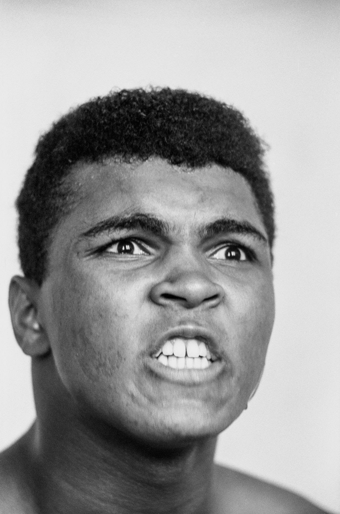
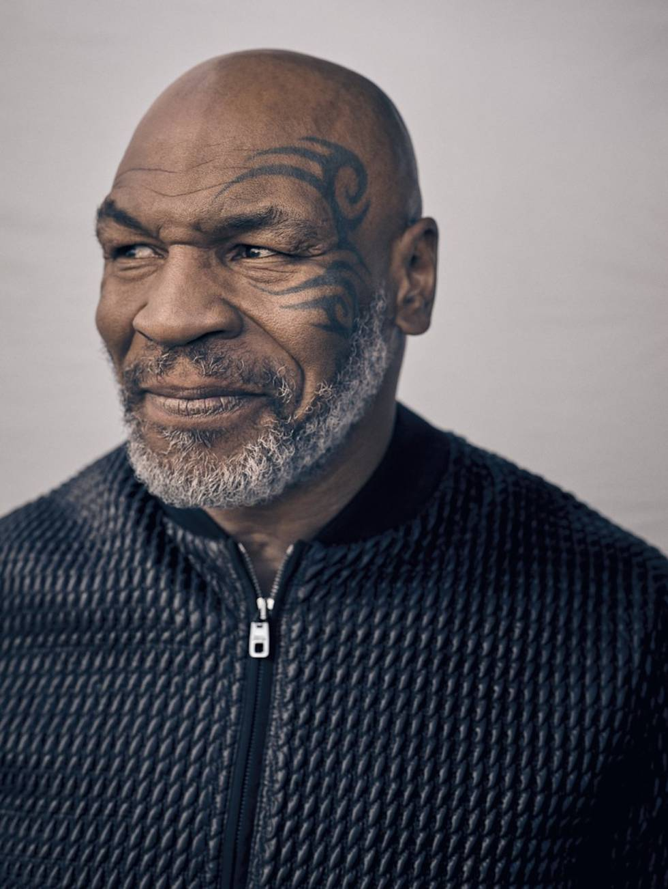
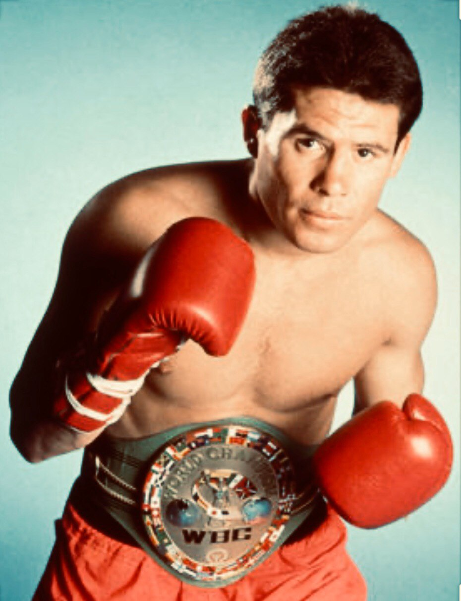

Jamás pensó en el boxeo, y mucho menos en convertirse en el icono que llegó a ser a nivel global. Un hecho anecdótico, circunstancial, le cambiaría su vida para siempre: el robo de su bicicleta. Emprendió su caza al ladrón, cuando un policía de la zona le interceptó pidiéndole explicaciones. Muhammad Ali, llorando, le dijo que iba a “darle una paliza padre” al ladrón. El policía en cuestión, Joe E. Martin, le aconsejó que entrenara unos golpes en el saco de boxear antes de pegar a nadie, para así descargar su ira. Más tarde, Joe sería su entrenador personal, ya que fue su mentor y la primera persona que vio el terrible potencial que Ali poseía por explotar aún.
Conocido en el mundo como Mike Tyson o Malik Abdul Aziz, es un ex-boxeador estadounidense, reconocido por haber ganado el título mundial de los pesos pesados y por ser el más joven de la historia en conseguir un título de esa categoría.Mike fue muy conocido por su ferocidad e intimidación como boxeador, protagonizando numerosos altercados dentro y fuera del cuadrilátero. Apodado "Iron" y "Kid Dynamite" al comienzo de su carrera, después llegó a ser calificado como el «hombre más malo del planeta».
Julio César Chávez González (Ciudad Obregón, Sonora; 12 de julio de 1962) fue un boxeador mexicano que compitió profesionalmente entre 1980 y 2005, obteniendo títulos mundiales en tres diferentes divisiones de peso: Superpluma, Ligero, y Superligero. Acumuló 107 victorias (86 de ellas por knockout), dos empates ante Pernell Whitaker y Miguel Ángel González, y seis derrotas ante Frankie Randall, Óscar de la Hoya, Willy Wise, Kostya Tszyu y Grover Wiley.
